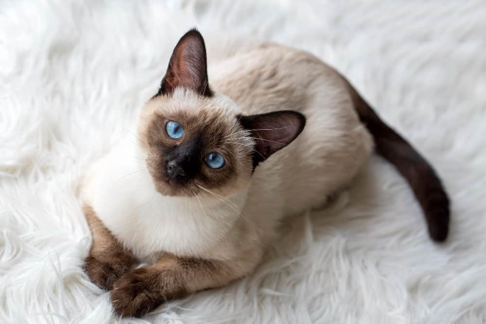
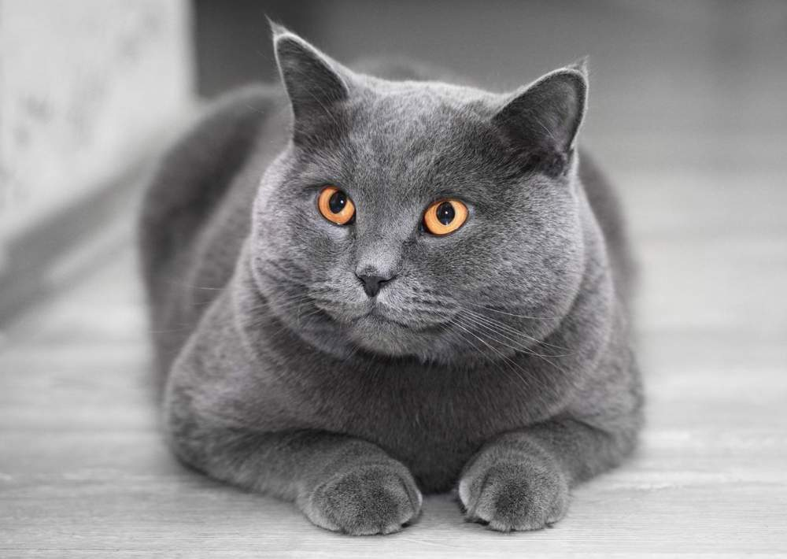
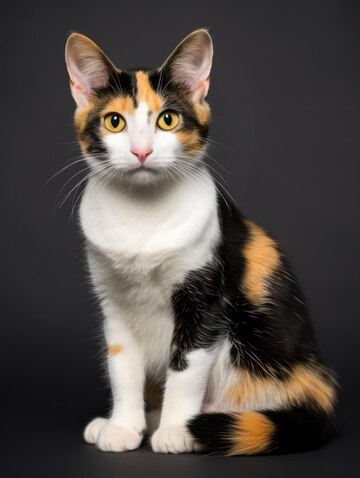
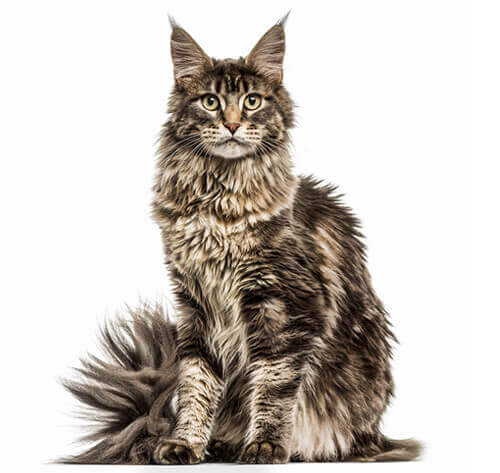
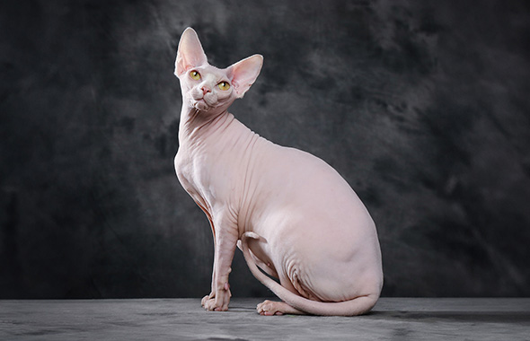
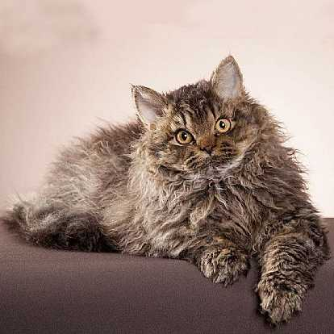

El siamés es afectuoso y sociable, y puede adaptarse sin problemas a la vida familiar. No obstante, también es muy curioso y activo, así que más vale que lo mantengas entretenido con juegos en los que tenga que ir a buscar objetos que le lances o con largos paseos por el barrio.
Leer mas
El British es un gato fuerte, grande y redondo. Un osito de peluche con un carácter tranquilo pero juguetón, cariñoso y nada independiente, es decir, un compañero felino perfecto. Todo esto y mucho más es lo que ha hecho de esta raza una de las más apreciadas en todo el mundo.
Leer mas
El bobtail japonés, un gato listo y dulce que se siente más feliz rodeado de gente, tiene una voz suave y melodiosa que llega al corazón de sus destinatarios. es un gato de tamaño medio que se presenta tanto en la variante de pelo largo como de pelo corto.
Leer mas
El Maine Coon es una gran raza de gato domesticado. Tiene una apariencia física distintiva y valiosas habilidades de caza. Es una de las razas naturales más antiguas de América del Norte. La raza se originó en el estado de Maine
Leer mas
Conocido también como gato egipcio o gato esfinge, es que no tiene pelaje. Sin embargo, no quiere decir que carezca totalmente de pelo, sino que está cubierto de una capa de pelo fino muy parecida a la piel del melocotón. Este gato no tiene bigotes ni pestañas.
Leer mas
El selkirk rex puede ser de pelo corto o pelo largo. Esta raza puede presentar los tres tipos de pelo posibles: el de guarda, el intermedio y el profundo. Los tres son ondulados, lo que proporciona al pelaje un tacto suave. La ondulación del pelaje varía con la edad, el género, el clima y la estación.
Leer mas